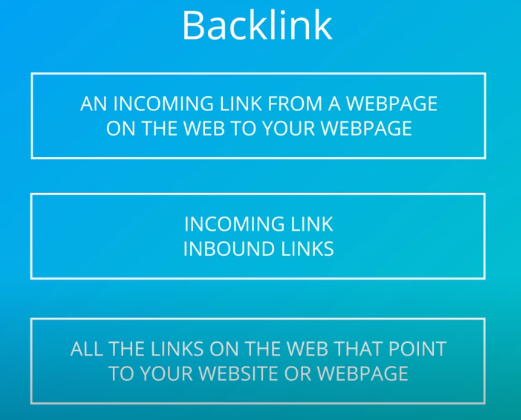

off-site seo begins with link building which is the process of gaining links from other websites to your own and it's core to improving your ranking
-->Link building can be challenging and by no means is it the short-term effort but the returns can be big


-->Ranking algorithm includes over 200 factor but Linking factors are the very core of those algorithms

-->search engines believe that several links pointing to your site is similar to many people saying that you are important but the search engine will also evaluate whether those links that point to you from external websites are of high quality and coming from trustworthy, credible sites, so not every incoming link is considered equally valuable

-----------------------------------------------------------------

Natural Links-->natural links are the links you do not have to ask for. they are naturally given to your website or page from external websites, natural links are gained when another website determines that they value your content or your product and they want to direct their own audience to that content
Manual Links-->are the links you gain by actively promoting your site and content, this is the process by which you manually contact a website or blogger to ask them for a backlink to your website or page
-->There are lots of tricks people try to create links for themselves, you should avoid these techniques as search engines will penalize your site if they detect these kinds of spammy links, using these sorts of tricks is called black hat practices
Black hat practices-->are strategies and techniques employed with the intention of deliberately "tricking" search engines
-----------------------------------------------------------
Domain Authority-->a score developed by Moz that predicts how well a website will rank on search engines
Page Authority-->a score developed by Moz that predicts how well a specific page will rank on search engines
Inbound Links-->Links from external sites that point to your site
Outbound Links-->Links on your page that link to outside pages
-->Social media links don't have the same weight as the links you get from other websites
-->Google is not looking at the number of likes and shares on facebook or the number of tweets or retweets, they're looking at real engagement that happens and social media just happens to be a conduit for that engagement
-------------------------------------------------------------
Before kicking off any marketing campaign, regardless of what channel you are focused on, always keep your objective in mind.
In this case, your objective is to build links with websites outside your own to improve the authority of your site in the eyes of search engines and as a result, help your content or products rank competitively in the search engine results page for a given keyword.
-----------------------------------------------------------------